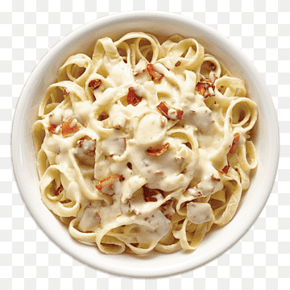

Cheese Pasta

Ingredients
- 12 ounces pasta (penne or fusilli recommended)
- 2 cups shredded cheddar cheese
- 1 cup grated Parmesan cheese
- 2 cups milk
- 3 tablespoons butter
- 2 tablespoons all-purpose flour
- 1 teaspoon garlic powder
- 1/2 teaspoon black pepper
- Salt to taste
- Fresh parsley (optional, for garnish)
STEPS:
- Gather all the ingredients. Bring a large pot of salted water to a boil and cook pasta according to package instructions. Drain and set aside.
- In a saucepan over medium heat, melt butter and add flour. Stir continuously for 2-3 minutes to create a roux.
- Slowly whisk in milk, ensuring there are no lumps. Cook until the mixture thickens, about 5 minutes.
- Stir in cheddar cheese, Parmesan, garlic powder, salt, and pepper. Mix until the cheese is fully melted and smooth.
- Add the cooked pasta to the cheese sauce and stir well to combine.
- Serve hot, garnished with fresh parsley if desired. Enjoy!
Home